| Semester | Studierende | Buecher |
|---|---|---|
| 1 | 36 | 32 |
| 2 | 28 | 29 |
| 3 | 35 | 34 |
| 4 | 39 | 35 |
| 5 | 30 | 29 |
| 6 | 30 | 30 |
| 7 | 31 | 30 |
| 8 | 38 | 38 |
| 9 | 36 | 34 |
| 10 | 38 | 33 |
| 11 | 29 | 29 |
| 12 | 26 | 26 |
6 Einfache lineare Regression
Hat man einen linearen Zusammenhang zwischen zwei Variablen entdeckt, möchte man diesen Zusammenhang präzise beschreiben und quantifizieren. Das Ziel der Regressionsanalyse ist es, ein Modell an die Daten anzupassen, das den linearen Zusammenhang beschreibt. Im Unterschied zur Korrelation wird hier ein gerichteter Zusammenhang untersucht. Wir möchten die Variabilität einer abhängigen Variable \(Y\), in unserem Beispiel der Kalorienverbrauch, durch eine unabhängige Variable \(X\), die Laufgeschwindigkeit, erklären.
6.1 Lernziele
Important
- Definiere die erklärende Variable als unabhängige Variable (Prädiktor) und die Antwortvariable als abhängige Variable.
- Erstelle Streudiagramme so, dass die unabhängige Variable auf der x-Achse und die abhängige Variable auf der y-Achse liegt.
- Wenn \(X\) die unabhängige und \(Y\) die abhängige Variable ist, wird das lineare Regressionsmodell gebildet als
\[Y_i = \beta_0 + \beta_1x_i + \epsilon_i, \quad i=1,\dots,n,\] wobei der Parameter \(\beta_0\) den Schnittpunkt mit der y-Achse (Achsenabschnitt, engl. intercept), der Parameter \(\beta_1\) die Steigung der Geraden beschreibt und \(\epsilon_i\) ein Zufallsfehler darstellt. Der Erwartungswert von \(Y\) ist eine deterministische lineare Funktion von \(x\), der lineare Prädiktor \[E(Y_i)=\beta_0+\beta_1x_i.\] Für die stochastischen Fehler \(\epsilon_i\) gelten die Annahmen: Die Fehler haben Erwartungswert 0, sind unabhängig und haben gleiche Varianz. Für Tests und Konfidenzintervallen bezüglich den Parametern müssen die Fehler auch normalverteilt sein. - Definiere die Residuen \(r_i\) als Differenz zwischen den beobachteten \(Y_i\) und den durch das Modell vorhergesagten (gefitteten) \(\hat{Y}_i\) Werten der abhängigen Variablen.
- Definiere die Kleinstquadratlinie (Regressionsgerade) als die Linie, welche die Summe der quadrierten Residuen minimiert.
- Du kannst die Bedingungen dafür nennen, dass die Konfidenzintervalle und Hypothesentests für die Koeffizienten der Kleinstquadratlinie gültig sind und diese überprüfen:
- Linearität –> Scatterplot
- Konstante Variabilität (Homoskedastizität) –> Residuen-Plot
- Normalverteilung der Residuen –> QQ-Plot
- Interpretiere die Steigung \(\beta_1\) wie folgt
- “Für jede Einheit um die sich der Wert von \(x\) erhöht, erwarten wir, dass \(Y\) im Durchschnitt um \(|\beta_1|\) Einheiten grösser bzw. kleiner wird.”
- Beachte dass es vom Vorzeichen von \(\beta_1\) abhängig ist, ob der Wert der abhängigen Variable zu- oder abnimmt.
- Beachte, dass die Kleinstquadratlinie stets durch den Mittelwert der abhängigen \(\bar{y}\) und der unabhängigen Variable \(\bar{x}\) verläuft.
- Interpretiere \(\beta_0\) (intercept) folgendermassen: “Wenn \(x = 0\), erwarten wir dass \(Y\) im Durchschnitt den Wert von \(\beta\) annimmt.
- Berechne den geschätzten Wert der abhängigen Variablen für einen bestimmten Wert der unabhängigen Variablen, \(x_i\), durch Einsetzen von \(x\) in das geschätzte lineare Modell:
\[\hat{Y} = \hat{\beta}_0 + \hat{\beta}_1x\]- Verwende nur Werte für \(x\), die im Bereich der beobachteten Daten liegen.
- Extrapoliere nicht über die Variationsbreite hinaus, ausser du bist dir sicher, dass das lineare Muster darüber hinaus gültig ist.
- Definiere das Bestimmtheitmass \(R^2\) als prozentualen Anteil der Variabilität der abhängigen Variablen, der durch die unabhängige Variable erklärt wird.
- Im Falle einer einfachen linearen Regression wird das Bestimmtheitsmass berechnet als das Quadrat des Korrelationskoeffizienten nach Pearson: \(R^2 = r^2\)
- Entscheide anhand des Outputs im Statistikprogramm (\(t\)-Wert und P-Wert), ob die unabhängige Variable ein signifikanter Prädiktor für die abhängige Variable ist.
- Führe die einfache lineare Regression in
Rdurch und interpretiere den Output.
6.2 Eine Bücherbestellung
Ein Buchhändler muss jeweils einen Monat bevor das Semester beginnt die Statistik-Bücher für die Studierenden im Statistik-Kurs bestellen. Er geht davon aus, dass die Anzahl Statistik-Bücher, die er in diesem Semester verkaufen wird, davon abhängt, wieviele Studierende für den Statistik-Kurs angemeldet sind. Aus den vergangenen 12 Semestern besitzt der Buchhändler die Listen mit der Anzahl der eingeschriebenen Studierenden und mit der Anzahl der pro Semester verkauften Bücher.
Für das kommende Semester haben sich 33 Studierende für den Statistikkurs angemeldet. Um möglichst nicht zu viele oder zu wenige Bücher zu bestellen, bittet er uns um Hilfe.
6.3 Unabhängige und abhängige Variable
Im vorliegenden Fall können wir davon ausgehen, dass ein kausaler Zusammenhang zwischen der Anzahl der Studierenden und der Anzahl der verkauften Bücher vorliegt: Der Wert der Variablen Studierende erlaubt eine Vorhersage über den Wert der Variablen Buecher oder m.a.W. der Wert der Variablen Buecher hängt vom Wert der Variablen Studierendeab. Damit können wir die Variable Buecherals abhängige Variable und die Variable Studierende als unabhängige Variable bzw. als Prädiktor bezeichnen.
6.3.1 Zusammenhang zwischen den Variablen
Wie bereits gewohnt, formulieren wir zuerst die Hypothesen:
- \(H_0: \rho = 0\) Es gibt keinen Zusammenhang zwischen der Anzahl Studierender und der verkauften Anzahl Bücher.
- \(H_A: \rho \neq 0\) Es gibt einen Zusammenhang zwischen der Anzahl Studierender und der verkauften Anzahl Bücher.
Als nächstes erstellen wir ein Streudiagramm: Wenn ein kausaler Zusammenhang vermutet wird, wird die unabhängige Variable auf der x-Achse und die abhängige Variable auf der y-Achse dargestellt.
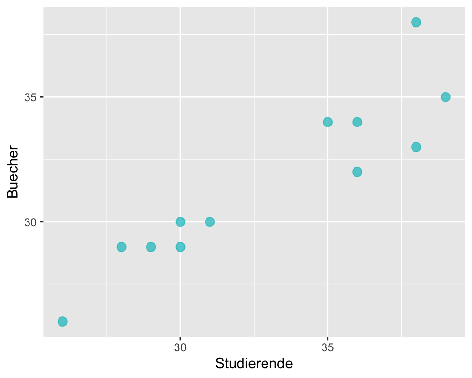
Die Daten zeigen einen moderaten bis starken positiven linearen Zusammenhang zwischen der abhängigen und der unabhängigen Variablen. Mit der Berechnung des Korrelationskoeffizienten können wir die Stärke des Zusammenhangs quantifizieren (das Signifikanzniveau legen wir auf \(\alpha = 0.05\) fest):
Pearson's product-moment correlation
data: bookstore$Studierende and bookstore$Buecher
t = 7.3326, df = 10, p-value = 2.504e-05
alternative hypothesis: true correlation is not equal to 0
95 percent confidence interval:
0.7279819 0.9771876
sample estimates:
cor
0.9182485 Die Daten liefern Evidenz für einen statistisch signifikanten, starken, positiven und linearen Zusammenhang zwischen der Anzahl an Studierenden und der Anzahl verkaufter Bücher (\(r\) = 0.918 [0.73; 0.98], p < 0.001)
6.4 Einfache lineare Regression
Mit der Korrelation konnten wir die Annahme eines Zusammenhangs zwischen Anzahl Studierender und der Anzahl verkaufter Bücher bestätigen. Die Frage ist allerdings nicht beantwortet, wieviele Bücher der Buchhändler für dieses Semester, an dem 33 Studierende für den Statistik-Kurs eingeschrieben sind, bestellen muss. Es wäre ideal, wenn wir auf Grundlage der vorliegenden Daten ein funktionelles Modell erstellen könnten, das uns bei der Schätzung der Anzahl Bücher helfen würde.
Die Regressionsanalyse liefert das Werkzeug dafür: Sie liefert uns ein Modell - nämlich eine Gerade und die zugehörige Gleichung - welches unsere Daten so gut wie möglich beschreibt. Im vorliegenden Fall hilft uns die Gleichung vorherzusagen, wieviele Bücher wir für jede zusätzliche Studierende verkaufen werden.
6.4.1 Lineare Funktion
Eine lineare Funktion kann grafisch durch eine Gerade dargestellt werden.
Die allgemeine Formel für eine Gerade im zweidimensionalen Koordinatensystem kennen wir aus der Schule. Sie lautet: \[y = a + bx\]
\(a\) = Achsenabschnitt: Wo schneidet die Gerade die y-Achse wenn x = 0?
\(b\) = Steigung: Um wieviel steigt y, wenn x um 1 Einheit grösser wird?
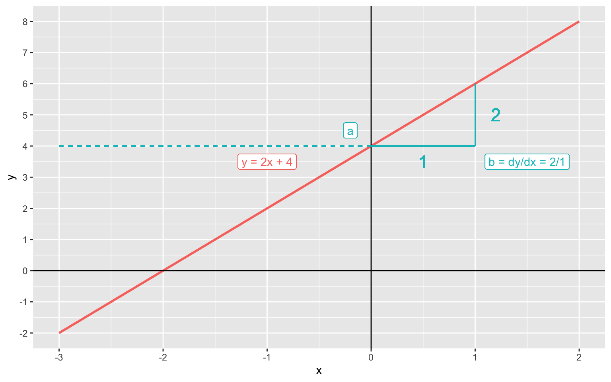
Wir sehen, dass wenn \(x\) um eine Einheit zunimmt (\(\Delta x\)), nimmt \(y\) um zwei Einheiten zu (\(\Delta y\)), d.h.
\[b = \frac{\Delta y}{\Delta x} = \frac{2}{1} = 2\]
Wenn \(x = 0\) ist \(y = 4\), d.h. \(a = 4\).
Unsere Geradengleichung lautet somit:
\[y = 4 + 2x\]
6.4.2 Das einfache lineare Modell
Die lineare Regression ist eine statistische Methode zur Konstruktion einer Geraden, die den Zusammenhang zwischen zwei Variablen \(X\) und \(Y\) beschreibt. Sie wird verwendet, wenn der Zusammenhang zwischen den Variablen näherungsweise linear ist, also durch eine Gerade modelliert werden kann. Diese Gerade dient als Modell für \(Y\) in Abhängigkeit von \(X\) und wird so bestimmt, dass sie die beobachteten Daten möglichst gut beschreibt.
Das einfache lineare Modell ist:
\[\boxed{Y_i = \beta_0 + \beta_1x_i + \epsilon_i, \quad i=1,\dots,n}\]
- \(\beta_0\) und \(\beta_1\) sind die Parameter des Modells.
- \(\epsilon_i\) bezeichnet den Zufallsfehler, der für jede Beobachtung unabhängig ist.
- \(\beta_0\) ist der Achsenabschnitt (in Statistikprogrammen oft als intercept bezeichnet) und gibt den erwarteten Wert von \(Y\) an, wenn \(x = 0\) ist.
- \(\beta_1\) ist die Steigung der Regressionsgeraden und beschreibt, wie stark sich \(Y\) im Mittel verändert, wenn sich \(x\) um eine Einheit verändert.
Die zentralen Annahmen des Modells sind:
- Die Fehler \(\epsilon_i\) haben den Erwartungswert Null, \(E(\epsilon_i)=0\)
- Die Fehler besitzen eine konstante Varianz (Homoskedastizität).
- Die Fehler sind voneinander unabhängig.
Daraus ergibt sich, dass der Erwartungswert von \(Y\) eine lineare Funktion von \(x_i\) ist: \[E(Y_i)=\beta_0+\beta_1x_i\]
Die Grösse \(\beta_0+\beta_1x_i\) wird als linearer Prädiktor bezeichnet.
Was also unser Modell von einer linearen Funktion unterscheidet ist der stochastische Teil. Gemäss Modell stellt \(Y_i\) dann eine Summe dar aus einem linearen Prädiktor und einem Zufallsfehler: \[\begin{equation} Y_i=\underbrace{\beta_0+\beta_1 \cdot x_i}_{linearer\,\,Prädiktor} +\underbrace{\epsilon_i}_{stochastisch},\qquad i=1,\ldots,n. \end{equation}\]
Wir wollen hier die Annahmen des Modells nochmal aufführen:
| Nr. | Annahme | Mathematische Formulierung | Bedeutung |
|---|---|---|---|
| 1 | Fehler mit Erwartungswert null | \(\mathbb{E}[\varepsilon_i] = 0\) | Das Modell ist im Mittel korrekt spezifiziert. |
| 2 | Homoskedastizität | \(\text{Var}(\varepsilon_i ) = \sigma^2\) | Die Fehler haben konstante Varianz (keine Heteroskedastizität). |
| 3 | Unabhängigkeit der Fehler | \(\varepsilon_i\) unabhängig | Die Fehlerterme beeinflussen sich nicht gegenseitig. |
| 4 | Normalverteilung der Fehler (optional) | \(\varepsilon_i \sim \mathcal{N}(0, \sigma^2)\) | Nur für Inferenz (Tests, Konfidenzintervalle) notwendig. |
Die letzte Annahme (Normalverteilung der Fehler) ist für die Punktschätzung von \(\beta_0\) und \(\beta_1\) (also für die empirische Gerade) nicht nötig, aber für Intervallschätzung und für statistische Tests. Wir schreiben als Annahme für die Fehler oft: \(\epsilon_i \overset{\text{iid}}\sim \mathcal{N}(0, \sigma^2)\), mit iid als unabhängig und gleich verteilt (independent and identically distributed).
Important
Damit wir später auf diesem Modell aufbauen können, ist es sehr wichtig, dass Sie dieses grundlegende Modell gut verstehen und durchdringen.
6.4.3 Der Kleinste-Quadrate Schätzer
Ziel ist es nun, aus Daten die Parameter \(\beta_0\) und \(\beta_1\), zu schätzen, d.h. wir brauchen eine Punktschätzung \(\hat{\beta_0}\) und \(\hat{\beta_1}\) für \(\beta_0\) und \(\beta_1\).
Eine Gerade in ein Streudiagramm einzeichnen heisst dann \(\hat{\beta_0}\) und \(\hat{\beta_1}\) aus den Daten bestimmen.
Betrachten wir noch einmal das Streudiagramm unseres Buchhändlers: Wie würden Sie die Gerade einzeichnen, welche die Daten am ehesten repräsentieren? Welche der vorgeschlagenen Geraden würden Sie als das am besten zutreffende Modell wählen?
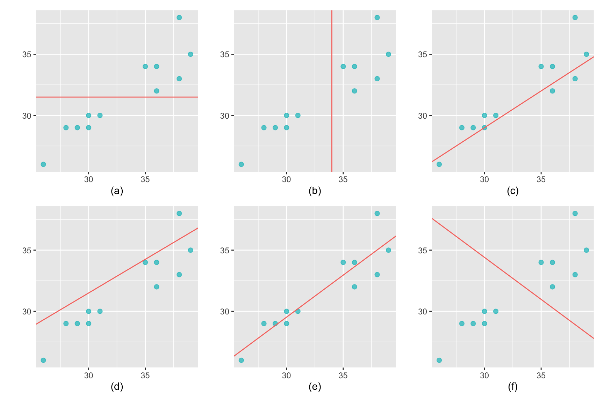
- Die Gerade beschreibt keinen linearen Zusammenhang.
- Die Gerade beschreibt keinen linearen Zusammenhang.
- Mögliches Modell, allerdings liegen mehr Punkte über als unter der Geraden.
- Mögliches Modell, allerdings liegen mehr Punkte unter als über der Geraden.
- Optimales Modell
- Die Gerade beschreibt einen negativen linearen Zusammenhang, das ist in dieser Situation Unsinn.
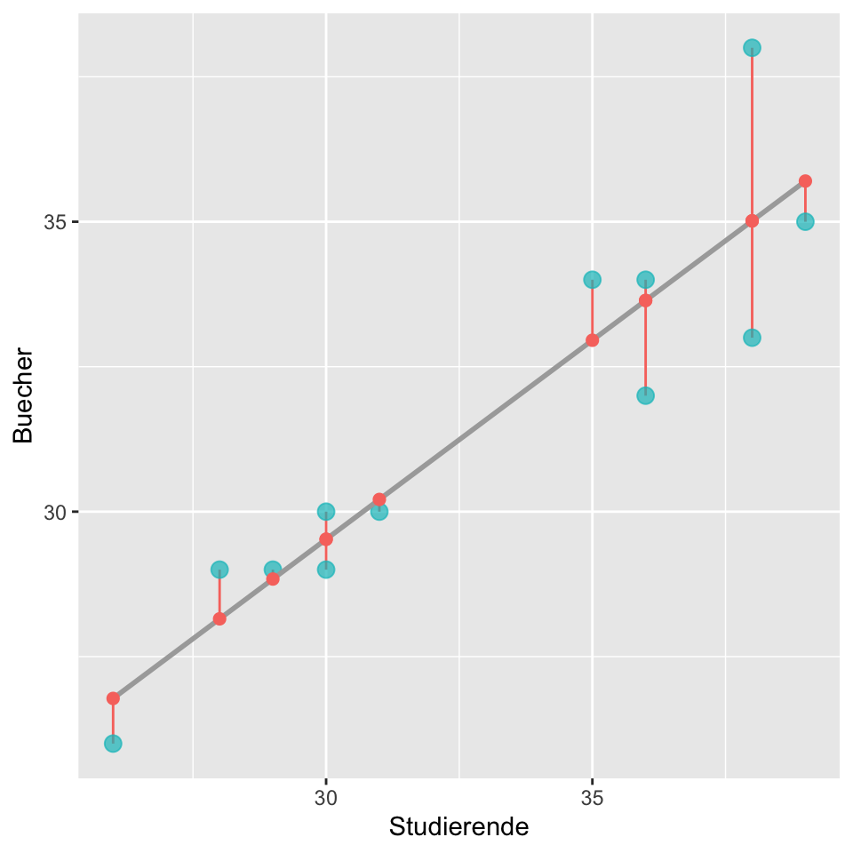
Die Abbildung 6.4 zeigt die Gerade (e), die den funktionalen Zusammenhang zwischen Anzahl Studierender und Anzahl verkauften Büchern modelliert. Die blauen Punkte sind die Anzahl effektiv verkaufter Bücher für entsprechende Studierendenanzahl und die roten Punkte sind die Anzahl der Bücher, die unser Modell vorhersagt. Die roten Punkte sind also die vom Modell berechneten Werte (fitted values) und wir sehen, dass die Gerade die meisten blauen Punkte verfehlt. Die senkrechten Linien zwischen den gemessenen Werten (blau) und den gefitteten Werten (rot) bezeichnen wir als Residuen.
Definition Residuum: Differenz zwischen dem Modell vorhergesagten Wert \(\hat{y}\) (gefitteter Wert) und dem tatsächlich beobachteten Wert \(y\). Das Residuum \(r_i\) der i-ten Beobachtung ist die Differenz zwischen dem beobachteten Wert \(y_i\) und dem vom Modell vorhergesagten Wert \(\hat{y_i}\).
\[r_i = y_i-\hat{y_i}\]
\(\hat{y_i}\) berechnen wir durch Einsetzen von \(x_i\) in den linearen Prädiktor.
Nun stellt sich die Frage: Was ist ein gutes Mass um die beste Gerade zu finden? Aus mathematischer Sicht möchten wir eine Gerade, die möglichst kleine Residuen ergibt. Die erste Option ist, eine Linie zu finden, bei der die Summe der Absolutwerte der Residuen minimal ist:
\[|r_1| + |r_2| + \dots + |r_n|=minimal\]
Dies wäre eine durchaus eine Möglichkeit, die üblichere Praxis ist allerdings, dass eine Gerade berechnet wird, bei der die Summe der quadrierten Residuen minimiert wird.
Dieser Kleinste-Quadrate-Schätzer ist – neben anderen Gründen – optimal, weil er unter den klassischen Annahmen der linearen Regression der beste lineare unverzerrte Schätzer (BLUE) ist – er liefert also im Mittel richtige Ergebnisse mit minimaler Streuung (ohne Beweis).
Wir minimieren also:
\[r_1^2 + r_2^2 +\dots + r_n^2\]
Man bestimmt also diejenigen \(\hat{\beta_0}\) und \(\hat{\beta_1}\), für die die Quadratsumme \(\sum r_i^2\) minimal wird. Man hat damit ein Optimierungsproblem zu lösen, nämlich \[\begin{equation} \arg\underset{\beta_0,\beta_1}{\operatorname{min\,}}\sum r_i^2=\arg\underset{\beta_0,\beta_1}{\operatorname{min\,}}\sum(Y_i-\beta_0-\beta_1 x_i)^2. \end{equation}\] Wir werden später für den allgemeinen Fall der multiplen Regression (für die Interessierten) eine allgemeine Herleitung machen für die Lösung dieses Problems. Für die einfache Regression ist die Lösung (ohne Beweis) \[\begin{equation} \label{eq:1} \hat\beta_1=\frac{\sum(y_i-\bar{y})(x_i-\bar{x})}{\sum(x_i-\bar{x})^2},\qquad \hat\beta_0=\bar{y}-\hat\beta_1\bar{x}. \end{equation}\]
Bei der einfach Regression gilt zudem \[ \hat\beta_1=\frac{\sum(y_i-\bar{y})(x_i-\bar{x})}{\sum(x_i-\bar{x})^2}=\frac{s_y}{s_x}r. \]
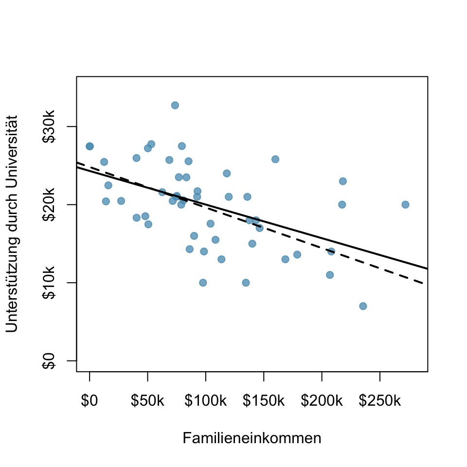
Die Abbildung 6.5 zeigt die finanzielle Unterstützung durch die Universität Elmhurst (Illinois) in Abhängigkeit vom Familieneinkommen (Bertrand and Mullainathan, n.d.). Die gestrichelte Linie wurde mit der Methode der Summe der Absolutwerte der Residuen und die ausgezogene Linie mit der Kleinst-Quadrat-Methode berechnet. Beide Varianten würden ein plausibles Modell ergeben, aber die Kleinst-Quadrat-Methode hat sich als Standard etabliert.
Die Berechnung der Geradengleichung überlassen wir i.d.R. R. Hier die Formeln für die Berechnung von Hand für die einfache lineare Regression:
Berechnung der geschätzten Steigung
\[\hat{\beta}_1 = \frac{s_y}{s_x}r\] wobei \(s_y\) die Standardabweichung von \(Y\), \(s_x\) die Standardabweichung von \(X\) und \(r\) der Korrelationskoeffizient nach Pearson ist.
Berechnung des geschätzten Achsenabschnitts
\[\hat{\beta}_0 = \bar{y} - \hat{\beta}_1 \bar{x}\]
wobei \(\bar{y}\) der Mittelwert von \(y\) und \(\bar{x}\) der Mittelwert von \(x\) ist.
Wir müssen das nicht von Hand berechnen. in R benutzen wir die Funktion zum Anpassen lineare Modelle lm(), eine der wichtigsten Funktionen in diesem Kurs.
function (formula, data, subset, weights, na.action, method = "qr",
model = TRUE, x = FALSE, y = FALSE, qr = TRUE, singular.ok = TRUE,
contrasts = NULL, offset, ...)
NULLSiehe auch das Help-File ?lm.
Zum Anpassen des Modells:
# lineares Modell erstellen und Zusammenfassung ausgeben
lm_bookstore <- lm(Buecher ~ Studierende, data = bookstore)
summary(lm_bookstore)
Call:
lm(formula = Buecher ~ Studierende, data = bookstore)
Residuals:
Min 1Q Median 3Q Max
-2.01515 -0.72083 -0.02424 0.56894 2.98485
Coefficients:
Estimate Std. Error t value Pr(>|t|)
(Intercept) 8.9333 3.1148 2.868 0.0167 *
Studierende 0.6864 0.0936 7.333 2.5e-05 ***
---
Signif. codes: 0 '***' 0.001 '**' 0.01 '*' 0.05 '.' 0.1 ' ' 1
Residual standard error: 1.388 on 10 degrees of freedom
Multiple R-squared: 0.8432, Adjusted R-squared: 0.8275
F-statistic: 53.77 on 1 and 10 DF, p-value: 2.504e-05Für unser Beispiel berechnet R für die Koeffizienten
- \(\hat{\beta}_0\) = 8.93 (Intercept)
- \(\hat{\beta}_1\) = 0.69
eingesetzt in den linearen Prädiktor resultiert
\[\widehat{Buecher} = 8.93 + 0.69 \times Studierende\]
Interpretation
- \(\hat{\beta}_0\) Achsenabschnitt: wenn keine Studierenden den Statistikkurs belegen (\(x=0\))
- \(\hat{\beta}_1\) Steigung: Pro zusätzliche Studierende steigt der Buchverkauf um 0.69 Bücher.
Unser Modell ermöglicht uns, eine Vorhersage zu machen für Werte, die wir so bisher noch gar nicht beobachtet haben. Wir können jetzt die Anzahl Bücher schätzen, die der Buchhändler im nächsten Semester, in dem 33 Studierende eingeschrieben sind, verkaufen wird, indem wir die Zahl 33 für x einsetzen.
\[\widehat{Buecher}_{x = 33} = 8.93 + 0.69 \times 33 = 31.7\]
Unser Modell sagt voraus, dass der Buchhändler 32 (31.7) Statistikbücher im nächsten Semester verkaufen wird.
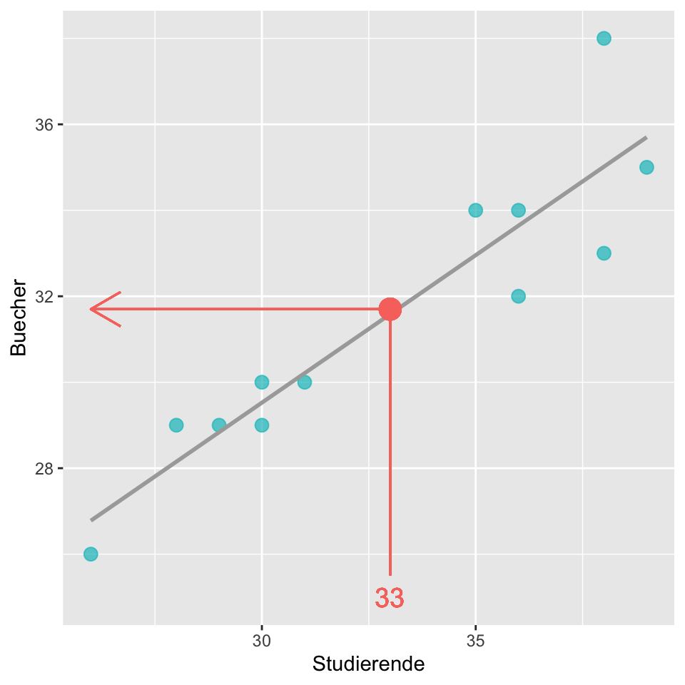
6.4.4 Warum man nicht über die gemessenen Daten hinaus extrapolieren sollte
Die Regressionsgleichung ist nur für den gemessenen Datenbereich gültig. Was dabei herauskommt, wenn man die Vorhersage über den gemessenen Datenbereich hinaus extrapoliert zeigt das folgende Beispiel.
Im September 2004 publizierte das Magazin Nature einen Artikel, in dem die Entwicklung der olympischen Siegerzeiten über 100m Sprint zwischen Männern und Frauen seit 1900 verglichen wurden. Die Autoren machten die Vorhersage, dass im Jahre 2156 die Frauen die 100m-Distanz schneller laufen werden als die Männer (Tatem et al. 2004).
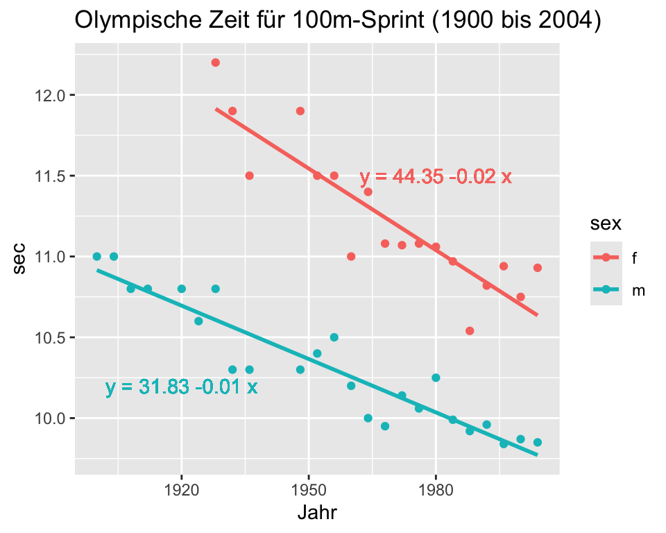
Die Steigung bei den Frauen ist etwas stärker negativ als bei den Männern (\(b_{1, f}\) = -0.02, \(b_{1,m}\) = -0.01). Das heisst, dass die Frauen in den Jahren 1928 bis 2004 ihre Geschwindigkeit im Durchschnitt um 0.01 Sekunden mehr steigern konnten als die Männer: Frauen wurden im Durchschnitt pro Jahr um 0.02 Sekunden schneller, Männer um 0.01 Sekunden.
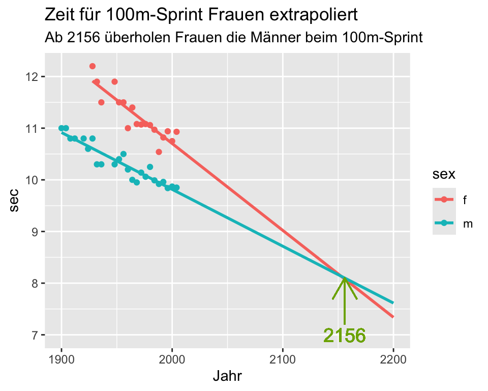
Die Autoren des Artikels haben nun berechnet, wie sich die Laufzeiten in Zukunft entwickeln werden. Extrapoliert man die Regressionsgleichung der olympischen Zeiten für 100m-Sprint über den Messzeitraum hinaus, überschneiden sich die Regressionsgeraden im Jahr 2156. Ab dann überholen die Frauen die Männer!
Man kann die Extrapolation jedoch noch weiter treiben: Wenn die Regressionsgleichung über den Messzeitraum hinaus gültig wäre, würden Frauen ab dem Jahr 2637 weniger als 0 Sekunden für den 100m-Lauf benötigen und in der Zeit zurück reisen!
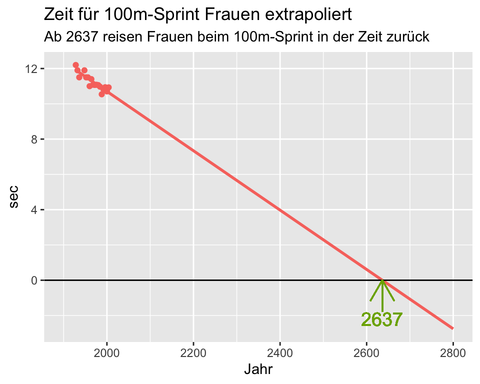
Wir lernen daraus, dass die Regressionsgerade immer nur für den effektiv gemessenen Datenbereich gültig ist.
6.4.5 Das Bestimmtheitsmass \(R^2\)
Das Bestimmtheitsmass \(R^2\) …
- sagt uns, wieviel Prozent der Streuung der abhängigen Variable \(Y\) durch die unabhängige Variable \(x\) erklärt wird. Anders formuliert: Wieviel Prozent der Änderung in \(Y\) von einem Datenpunkt zum anderen durch \(x\) erklärbar ist.
- kann Werte zwischen 0 und 1 annehmen (0 bis 100%).
- ist bei der einfachen linearen Regression das Quadrat des Korrelationskoeffizienten nach Pearson: \(R^2 = r^2\).
- ist umso grösser, je geringer Daten um die Regressionsgerade streuen.
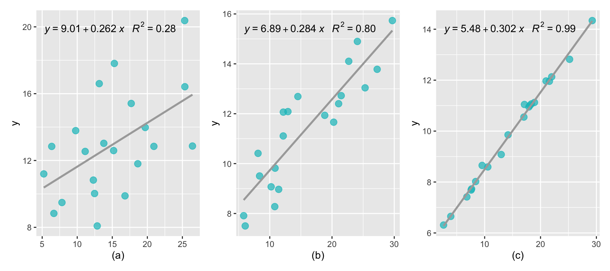
Eine Variable \(y\) kann folglich umso besser durch die Variable \(x\) erklärt werden, je größer die Korrelation \(r\) zwischen beiden Variablen dem Betrag nach ist. Anders formuliert: Je größer \(R^2\) ist, desto besser ist die Anpassung der Regressionsgeraden an die Daten.
\(R^2\) lässt sich auch mit einer anderen Herangehensweise berechnen. Wie gross wären die Residuen, wenn wir keine Prädiktorvariable haben, also mit dem Modell \(Y_i=\beta_0+\epsilon_i\), einem Modell nur mit Intercept?
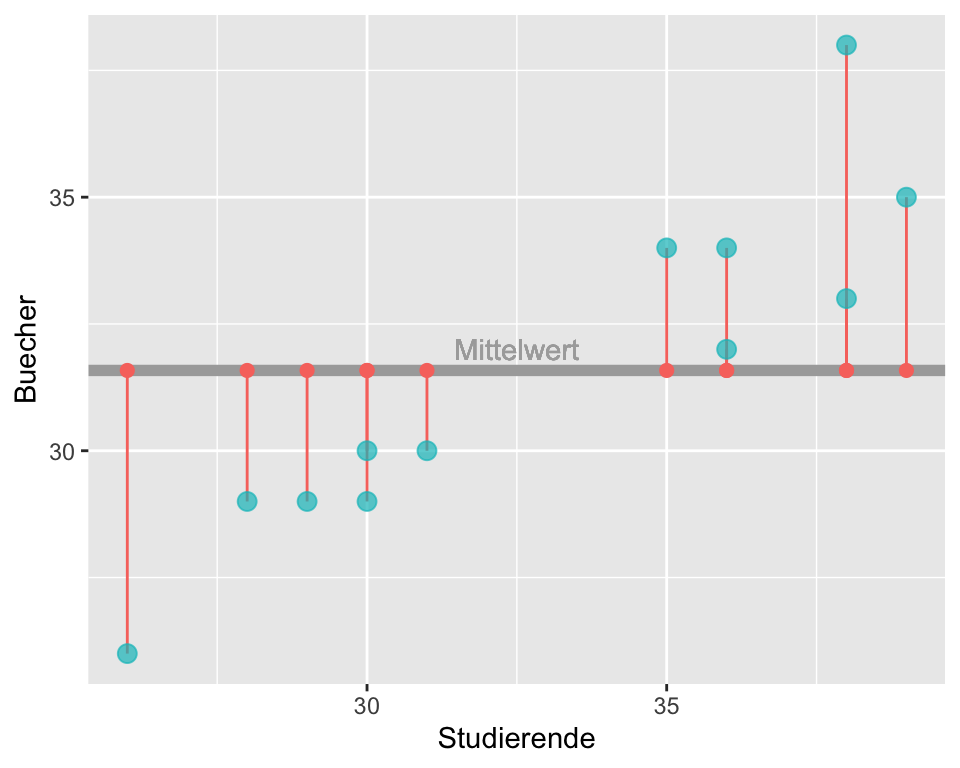
Wenn man alle diese Abstände in Abbildung 6.11 quadriert und aufsummiert, dann bekommt man die totalen Sum of Squares, kurz \(SS_{total}\). In unserem Fall ist \(SS_{total} = 122.92\).
Wie gross sind die Sum of Squares, wenn wir nun eine Prädiktorvariable hinzufügen? Diese Abbildung haben Sie oben schon gesehen:
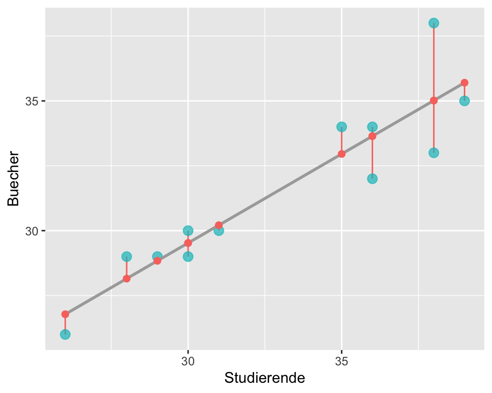
Wenn man nun diese Abstände in Abbildung 6.12 quadriert und aufsummiert, dann kommt man auf die verbleibenden Sum of Squares, kurs \(SS_{residuals}\). Man sieht, dass sich die Abstände verkleinert haben: \(SS_{residuals} = 19.28\).
Man kann sich nun fragen, um wie viel die Prädiktorvariable die Sum of Squares reduziert hat:
\(SS_{model} = SS_{total} - SS_{residuals} = 122.92 - 19.28 = 103.64\)
Wenn man diesen Anteil in Prozent ausrechnet, dann erhält man genau \(R^2\):
\(R^2 = \frac{SS_{model}}{SS_{total}} = \frac{103.64}{122.92} = 0.8432\)
Die Sum of Squares reduzieren sich um 84.32% –> Von der ursprünglichen Variabilität der abhängigen Variable kann mit Hilfe der Prädiktorvariable 84.32% erklärt werden.
6.5 Einfache lineare Regression in R
6.5.1 Modell erstellen und Output interpretieren
Zur Erläuterung des R-Outputs verwenden wir die Fragestellung aus der Buchhandlung. Es werden nur die wichtigsten Angaben erläutert. Eine detaillierte Beschreibung des Outputs findet man z.B. hier
# ein lineares Modell berechnen
model <- lm(Buecher ~ Studierende, data = bookstore)
# Zusammenfassung des Modells anzeigen
summary(model)
Call:
lm(formula = Buecher ~ Studierende, data = bookstore)
Residuals:
Min 1Q Median 3Q Max
-2.01515 -0.72083 -0.02424 0.56894 2.98485
Coefficients:
Estimate Std. Error t value Pr(>|t|)
(Intercept) 8.9333 3.1148 2.868 0.0167 *
Studierende 0.6864 0.0936 7.333 2.5e-05 ***
---
Signif. codes: 0 '***' 0.001 '**' 0.01 '*' 0.05 '.' 0.1 ' ' 1
Residual standard error: 1.388 on 10 degrees of freedom
Multiple R-squared: 0.8432, Adjusted R-squared: 0.8275
F-statistic: 53.77 on 1 and 10 DF, p-value: 2.504e-05Erläuterung zum Output
Unter Call: sehen wir noch einmal die Formel, also was die abhängige und was die unabhängige Variable ist.
Im nächsten Abschnitt Residuals: sehen wir einige Lagemasse für die Residuen, welche einen ersten Anhaltspunkt dazu geben, ob die Residuen symmetrisch um 0 verteilt sind. Weiter unten wird aber noch genauer auf die Residuendiagnostik eingegangen.
Der Teil Coefficients: ist der wichtigste Abschnitt des Outputs hier sehen wir unter Estimate die geschätzten Koeffizenten \(\hat{\beta}_0\) (Intercept) und \(\hat{\beta}_1\) (Studierende). In den Spalten dahinter folgen der Standardfehler, der \(t\)-Wert und der P-Wert für die jeweiligen Koeffizienten. Meistens interessiert die Frage, ob die Steigung von 0 verschieden ist (Steigung = 0 bedeutet kein Zusammenhang). Die Hypothesen zu dieser Frage, also bzgl. \(\beta_1\) sind:
- \(H_0: \beta_1 = 0\)
- \(H_A: \beta_1 \neq 0\)
\(\beta_0\) bezieht sich auf die Frage, wie viele Bücher man mit 0 Studierenden verkauft. Die Hypothese bzgl. \(\beta_0\) lauten:
- \(H_0: \beta_0 = 0\)
- \(H_A: \beta_0 \neq 0\)
Die Hypothese bzgl. dieser Quantität ist meistens nicht von Interesse.
Die lm()-Funktion braucht immer die \(t\)-Verteilung mit \(n-p\) Freiheitsgraden, um P-Werte zu berechnen. \(p\) ist dabei die Anzahl Parameter, hier \(p=2\).
Ist der P-Wert kleiner als das Signifikanzniveau, das meist auf \(\alpha\) =0.05 festgelegt wird, wird die entsprechende Nullhypothese verworfen..
Meist interessiert nur der P-Wert für den Test der Steigung \(\beta_1\). Im vorliegenden Fall ist \(p < 0.001\), was uns schlussfolgern lässt, dass ein signifikanter Zusammenhang zwischen der Anzahl verkaufter Bücher und der Anzahl Studierenden vorliegt.
Mit dem Standardfehler und der Anzahl Freiheitsgraden \(df\) (siehe unten im Output) können wir ein Konfidenzintervall für z.B. \(\beta_1\) berechen:
b1 <- 0.6864 # Siehe Output
se <- 0.0936 # Siehe Output
CI95<-b1+c(-1,1)*qt(0.975,10)*se
CI95[1] 0.4778462 0.8949538Wir können die Information auch direkt aus dem Modellobjekt extrahieren, das verhindert Rundungsprobleme:
b1<-summary(model)$coef[2,1]
se<-summary(model)$coef[2,2]
CI95<-b1+c(-1,1)*qt(0.975,10)*se
CI95[1] 0.4778009 0.8949263Natürlich gibt es auch dafür eine eigene R-Funktion, welche zum gleichen Ergebnis führt:
confint(model) 2.5 % 97.5 %
(Intercept) 1.9930720 15.8735947
Studierende 0.4778009 0.8949263Wir sehen, dass das Konfidenzintervall für \(\beta_1\) den Nullwert nicht beinhaltet, was kongruent mit dem P-Wert ist.
Noch weiter unten im Output steht Residual standard error. Die Benennung ist etwas unglücklich: Dieser Wert ist die Standardabweichung der Residuen. Weil die Residuen in einem linearen Modell aber die Fehler schätzen, wurde wohl dieser Begriff gewählt.
In der zweitletzten Zeile sehen Sie Multiple R-squared, also \(R^2\). Das Adjusted R-squared und die F-Statistics sind erst bei der multiplen linearen Regression von Bedeutung, diese wird im nächsten Kapitel behandelt.
6.6 Residuenanalyse
Die Annahmen für die lineare Regression waren:
- Die Fehler haben Erwartungswert 0
- Die Fehler sind unabhängig
- Die Fehler haben gleiche Varianz.
- Für Tests und Konfidenzintervallen bezüglich den Parametern müssen die Fehler zusätzlich normalverteilt sein (oder \(n\) gross).
Da wir die Fehler \(\epsilon_i\) nicht kennen, untersuchen wir die Voraussetzungen mit den Residuen \(r_i\):
- Die Residuen sind voneinander unabhängig (schwierig zu prüfen, abhängig vom Studiendesign)
- Die Streuung der Residuen ist über den Bereich von \(x\) konstant (Homoskedastizität).
- Die Residuen sind normalverteilt (oder grosses \(n\), dann gilt zentraler Grenzwertsatz).
Achtung: Die lineare Regression macht keinerlei Annahmen bezügliche der Verteilung der Variablen selber! die Annahme einer Normalverteilung bezieht sich nur auf die Fehler!
6.6.1 Diagnostische Plots
Die Verteilung der Residuen (als Schätzer für die Fehler \(\epsilon_i\)) wird anhand eines QQ-Plots der Residuen geprüft. Die Streung der Residuen anhand eines Plots, der die gefitteten Werte auf der x-Achse und die Residuen auf der y-Achse darstellt.
In R kann über die Funktion plot(model) eine Serie von 4 diagnostischen Plots ausgegeben werden. Der erste Plot erlaubt die Beurteilung der Homoskedastizität, der zweite Plot ist ein QQ-Plot.
# Modell erstellen, wenn nicht schon gemacht
model <- lm(Buecher ~ Studierende, data = bookstore)
# über 'which' wählen wir die ersten beiden Plots
plot(model, which = c(1, 2))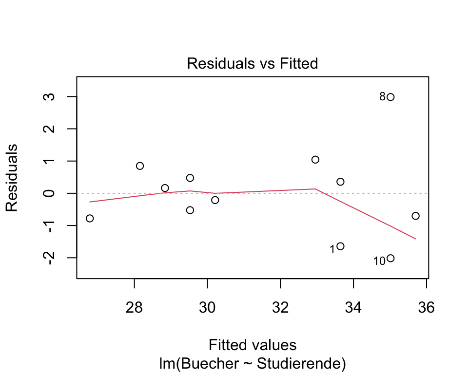
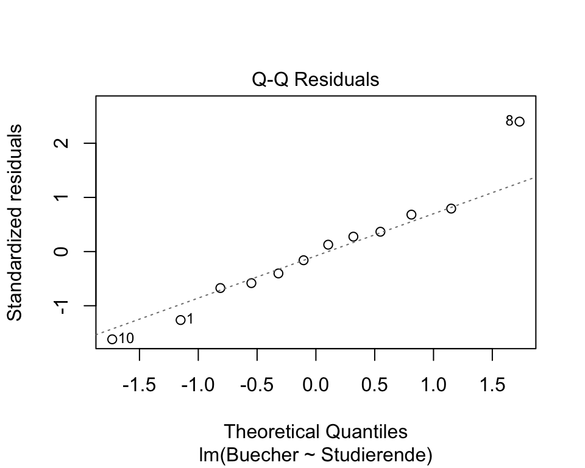
6.6.2 Interpretation der Plots:
- QQ-Plot: Die Punkte sind einigermassen auf der Linie und wir entscheiden auf Normalverteilung der Residuen. Bei kleinen Stichproben wie im vorliegenden Fall ist die Entscheidung meist nicht ganz sicher möglich.
- Residuen vs. gefittete Werte: Die Streuung der Residuen wird von links nach rechts, d.h. mit zunehmender geschätzter Zahl an verkauften Büchern etwas grösser. Streng genommen ist damit die Voraussetzung nicht erfüllt, dass die Streuung der Residuen über den gesamten Messbereich gleich ist und es liegt Heteroskedastizität vor. Jedoch gilt auch hier: bei kleinen Stichproben ist die Entscheidung meist nicht ganz sicher möglich.
6.6.3 Was bedeutet es, wenn die Voraussetzungen nicht erfüllt sind?
- Signifikanztests und Konfidenzintervalle für die Koeffizienten haben nicht die erwarteten Eigenschaften und werden dadurch schlecht interpretierbar.
- Die Koeffizienten sind immer noch gültig!
6.6.4 Beispielplots zu Homo- und Heteroskedastizität
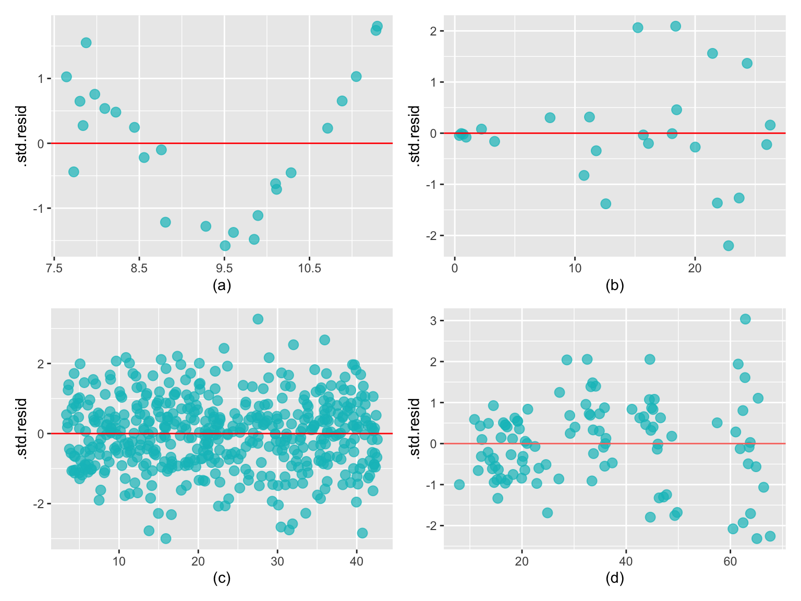
Nur Abb. c) erfüllt die Bedingung für Homoskedastizität. In Abb. a) bilden die Residuen ein Muster, was die Annahme verletzt, dass die Residuen zufällig um die Null-Linie herum streuen. In Abb. b) und d) ist die Verteilung heteroskedastisch; mit zunehmendem x nimmt auch die Streuung der Residuen um die Null-Linie herum zu.
6.7 Dichotomer Prädiktor
Im Beispiel mit den Büchern war die unabhängige Variable eine quantitative Variable. Man kann eine lineare Regression aber auch mit qualitativen (kategorischen) unabhängigen Variablen verwenden. Zur Illustration dieser Situation wird der Datensatz zu den embryonalen Stammzellen (ESC) verwendet, welchen Sie bereits aus dem Kaptiel 4 kennen (Hat die Behandlung mit embryonalen Stammzellen (ESC) einen Effekt auf die Pumpfunktion des Herzens nach einem Herzinfarkt?). Wir untersuchen also den linearen Zusammenhang zwischen der Gruppenzugehörigkeit und der Pumpfunktion.
Die folgende Tabelle enthält die Kennzahlen aus einem Experiment, bei dem der Effekt von ESC bei Schafen, die einen Herzinfarkt erlitten hatten, geprüft wurde. Jedes dieser Schafe wurde randomisiert der Gruppe ESC oder der Kontrollgruppe zugewiesen, dann wurde ihre Herzkapazität (Auswurffraktion) gemessen (Ménard et al. 2005). Ein positiver Wert entspricht einer Steigerung der Auswurffraktion, was einer besseren Erholung entspricht.
Codebook für den Datensatz stemcell .
| Variable | Beschreibung |
|---|---|
| trtm | Behandlung: ctrl = Kontrolle, esc= embryonale Stammzellen |
| before | Baseline: Auswurffraktion vor der Behandlung |
| after | Follow-Up: Auswurffraktion nach der Behandlung |
| Differenz | after - before |
| trmt | n | m | s |
|---|---|---|---|
| ctrl | 9 | -4.33 | 2.76 |
| esc | 9 | 3.50 | 5.17 |
Die Kennzahlen zeigen, dass die Auswurffraktion in der Kontrollgruppe CTRL um durchschnittlich -4.33% abgenommen und in der Interventionsgruppe ESC um 3.5% zugenommen hat. Die absolute Mittelwertsdifferenz beträgt somit 7.83%.
In Abbildung 6.14 werden diese Daten in einem Streudiagramm eingezeichnet. Dafür wird die Gruppe ctrl mit 0 codiert und die Gruppe esc mit 1. Die Regressionslinie (rot) ist ebenfalls eingezeichnet. Vielleicht ahnen Sie schon, worauf das Ganze hinausläuft?
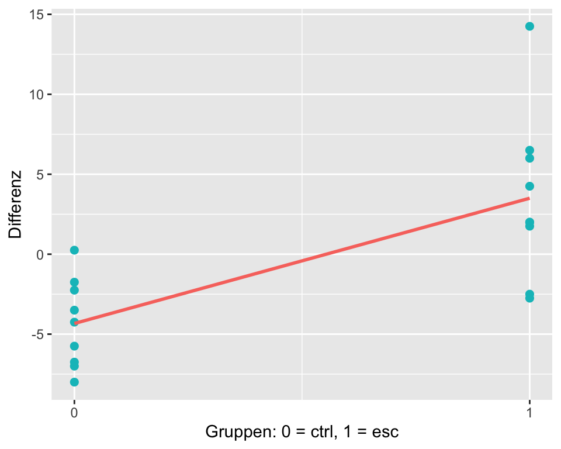
Der Output für der linearen Regression sieht wie folgt aus:
model <- lm(Differenz ~ trmt, data = stem_cell)
summary(model)
Call:
lm(formula = Differenz ~ trmt, data = stem_cell)
Residuals:
Min 1Q Median 3Q Max
-6.2500 -2.2500 -0.6667 2.3958 10.7500
Coefficients:
Estimate Std. Error t value Pr(>|t|)
(Intercept) -4.333 1.382 -3.135 0.00639 **
trmtesc 7.833 1.955 4.007 0.00102 **
---
Signif. codes: 0 '***' 0.001 '**' 0.01 '*' 0.05 '.' 0.1 ' ' 1
Residual standard error: 4.147 on 16 degrees of freedom
Multiple R-squared: 0.5009, Adjusted R-squared: 0.4697
F-statistic: 16.06 on 1 and 16 DF, p-value: 0.001016Was bedeuten nun die Regressionskoeffizienten? \(\hat{\beta}_0\) ist die durchschnittliche Differenz, wenn \(x = 0\). \(x = 0\) ist gleichbedeutend mit “das Schaf ist in der Kontrollgruppe”. Also ist \(\hat{\beta}_0\) die durchschnittliche Differenz der Schafe in der Kontrollguppe: \(\hat{\beta}_0 = -4.33%\). Sie können diese Aussage mit den deskriptiven Angaben weiter oben verifizieren.
\(\hat{\beta}_1\) ist die geschätzte Steigung. Also um wie viel sich die durchschnittliche Differenz ändert, wenn sich x um 1 erhöht. “x um 1 erhöht” ist gleichbedeutend mit “das Schaf ist in der Interventionsgruppe”. Das heisst wenn das Schaf in der Interventionsgruppe ist, dann ist die durchschnittliche Differenz 7.83% höher als wenn es in der Kontrollguppe ist: \(\hat{\beta}_1 = 7.83\). \(\hat{\beta}_1\) ist also nichts anderes als die geschätzte Mittelwertsdifferenz! (Auch hier können Sie mit den obigen deskriptiven Statistiken verifizieren).
Der Standardfehler für diese Mittelwertsdifferenz beträgt 1.955, somit beträgt der \(t\)-Wert von 4.007, was einen P-Wert von 0.00102 ergibt. Wenn Sie nun denken, dass ein Zwischengruppen-\(t\)-Test (mit Annahme von homogenen Varianzen!) zum gleichen Resultat kommen müsste, dann haben Sie absolut recht!
print(t.test(Differenz ~ trmt, data = stem_cell, var.equal = TRUE),digits=5)
Two Sample t-test
data: Differenz by trmt
t = -4.01, df = 16, p-value = 0.001
alternative hypothesis: true difference in means between group ctrl and group esc is not equal to 0
95 percent confidence interval:
-11.9773 -3.6894
sample estimates:
mean in group ctrl mean in group esc
-4.3333 3.5000 Ein Zweistichproben \(t\)-Test mit homogenen Varianzen und eine einfache lineare Regression mit der Gruppe als dichotomer Prädiktorvariable sind äquivalent und führen exakt zum gleichen Resultat!
6.8 Anhang: hilfreiche R Codes für die einfache lineare Regression
# Erstellen der Variablen x und y
x <- c(-2, -1.5, -.5, 0, 1, 3, 4)
y <- c(5, 4.5, 6, 5.5, 6, 6.5, 7.5)
# Streudiagramm erstellen
plot(x, y)
# Einfache lineare Regression rechnen und Resultat in R-Objekt speichern
lm.xy <- lm(y ~ x)
# Zusammenfassung des Modells anschauen
summary(lm.xy)
# Vertrauensintervalle der Koeffizienten ausgeben
confint(lm.xy)
# Regressionslinie in Streudiagramm einzeichnen
plot(x, y)
abline(lm.xy)
# Residuenplot
plot(lm.xy, which = 1)
# QQ-Plot der Residuen
plot(lm.xy, which = 2)